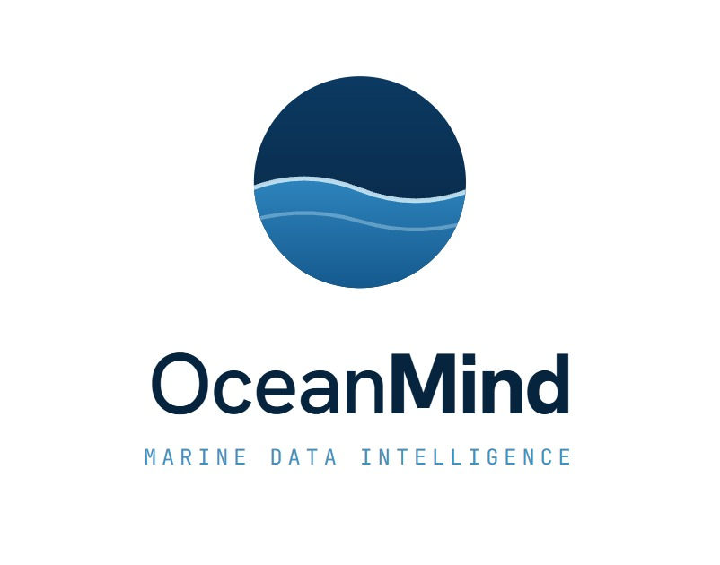
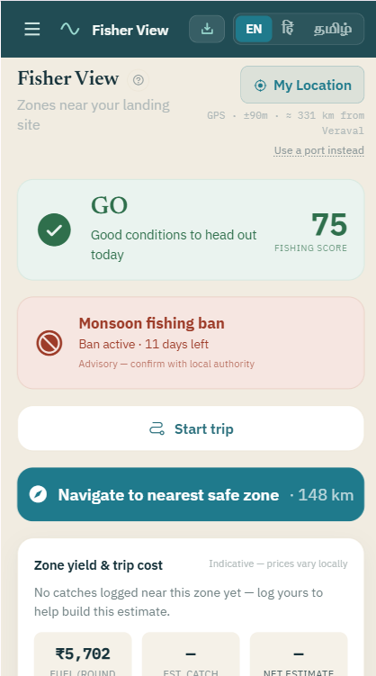
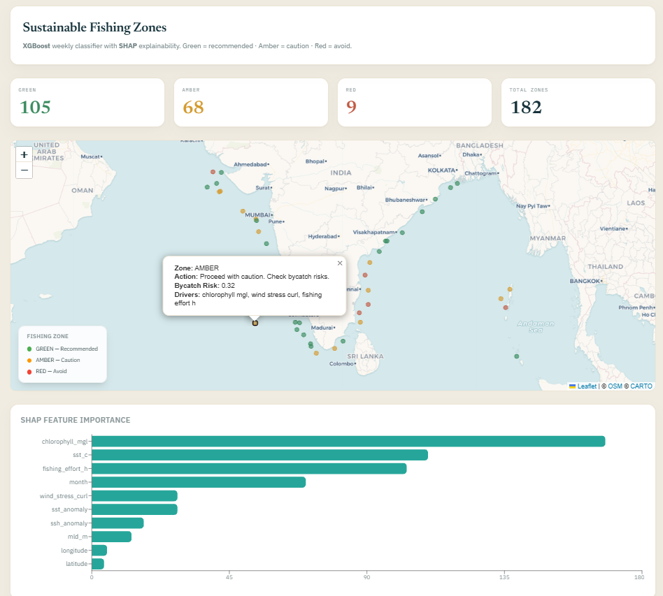
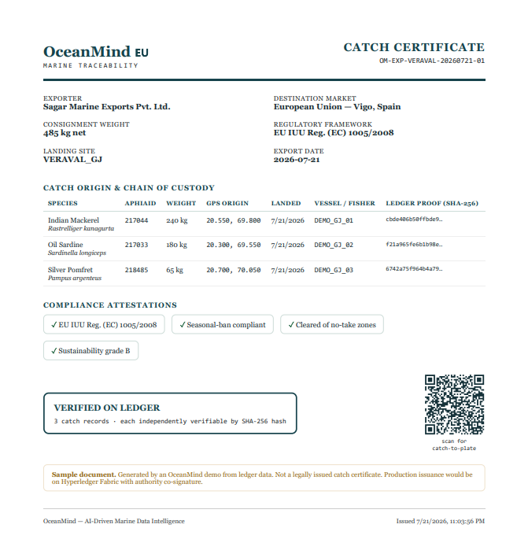

Three siloed data pillars — oceanographic, fisheries and molecular biodiversity — joined into one queryable layer, and delivered as a single word to the person who needs it at 4 a.m.
A fisher’s decision to sail costs ₹3 lakh. He makes it on a guess, at 4 a.m.
of a mechanised trawler’s operating cost is fuel (CMFRI)
Indians depend on marine fisheries for their living
of world fish stocks overfished (FAO 2025 — 2,570 stocks)
small-scale fishers below the 15 m AIS tracking threshold
The fisher loses money and the ocean loses fish — from the same bad guess. Existing advisories tell him where fish might be. Nothing tells him why, in a language he speaks, or proves what he actually caught once he lands it.
India’s INCOIS already publishes free Potential Fishing Zone advisories, and we’d consume them as a source. Three structural limits remain, and they’re where OceanMind lives.

One word, on his phone. Live sea state, the active ban, and what the trip costs in fuel.

The model explains itself. 182 zones classified weekly — SHAP ranks chlorophyll-a above SST and fishing effort, with a bycatch risk score on every zone.

Boat to buyer. EU IUU Reg. 1005/2008 chain of custody — every line carries a verifiable SHA-256 proof.
ARGO · INCOIS · GFW
CMFRI · WoRMS · NCBI
FishBase · Open-Meteo
Schema matching across NetCDF / JSON / FASTA · PostGIS fusion · AIS quality QC · provenance tagging
Isolation Forest · XGBoost + SHAP · YOLOv8 + ResNet50 · RAG on Llama 3.3 70B
PWA · SMS alerts · voice (Hindi / Tamil) · 20 REST endpoints · hash ledger
Ours: the integration layer, both models, the SHAP and provenance layers, the ledger and the whole product surface. Third-party: Open-Meteo (weather), Groq (LLM inference), Roboflow (vision hosting), Bhashini (voice). The novelty isn’t a new architecture — it’s that these three data pillars have never been joined in one queryable layer.
| Model | Job | Why this model | Status |
|---|---|---|---|
| Isolation Forest | Marine Health Index | Unsupervised — no ground truth exists for “ocean health”; detects deviation from regional climatology | Working |
| XGBoost + SHAP | Fishing zone class | Tabular, six features — boosting beats deep nets here, and tree SHAP gives exact attributions | Unvalidated vs CPUE |
| YOLOv8 + ResNet50 | Species ID from photo | 13 species = majority of Indian landings by volume; resolves to WoRMS AphiaID | Live inference |
| ConvLSTM | Migration forecast | Routes are CMFRI / IOTC tagging literature; +2 °C shift from published rates | Scaffolded |
The platform ships a /trust page stating all of this publicly, in product.
India’s seafood exports, FY 2023–24 — the addressable market
EU IUU Regulation — no certificate, no market access
PMMSY fisheries allocation, Union Budget 2025–26
fishers already on the National Fisheries Digital Platform
We don’t build distribution — we plug into it. Platform run cost at pilot scale is ₹25,000 / month, because every input is open data. Break-even ≈ 250 certificates a month.
fuel saved per year across the pilot
back in each fisher’s pocket, annually
CO₂ avoided per year — ≈ 126 cars off the road
of logged catch rated sustainable (live figure)
Derived from five stated assumptions — 500 fishers × 12 trips/month × 3 L saved/trip × ₹95/L — all printed in-product on the /impact page. Deliberately conservative: INCOIS advisory studies report 15–25% fuel reduction; we modelled far below that because we have not measured it ourselves yet.